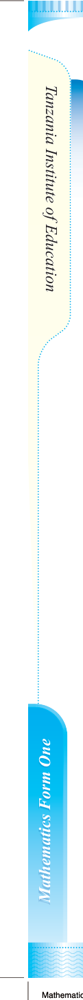
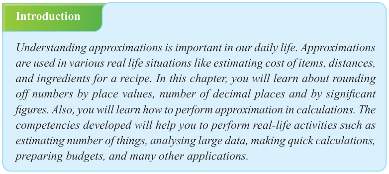
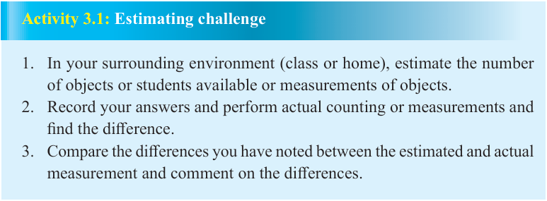

Chapter Three
Approximations

Introduction
Understanding approximations is important in our daily life. Approximations are used in various real life situations like estimating cost of items, distances, and ingredients for a recipe. In this chapter, you will learn about rounding off numbers by place values, number of decimal places and by significant figures. Also, you will learn how to perform approximation in calculations. The competencies developed will help you to perform real-life activities such as estimating number of things, analysing large data, making quick calculations, preparing budgets, and many other applications.
Meaning of approximations
Approximation is a process of finding a number that is closest to the exact value. It involves expressing a number into a higher or lower value which is close to the exact value. Approximation can be termed as estimation and is represented by the symbol ‘≈’.

Activity 3.1: Estimating challenge
- 1. In your surrounding environment (class or home), estimate the number of objects or students available or measurements of objects.
- 2. Record your answers and perform actual counting or measurements and find the difference.
- 3. Compare the differences you have noted between the estimated and actual measurement and comment on the differences.
Rounding off numbers
Rounding off numbers is a process of making a number simpler, but keeping its value closer to the original value. The outcome is less precise but more user-friendly. Rounding off the number can be done by considering place values, number of decimal places, and number of significant figures.